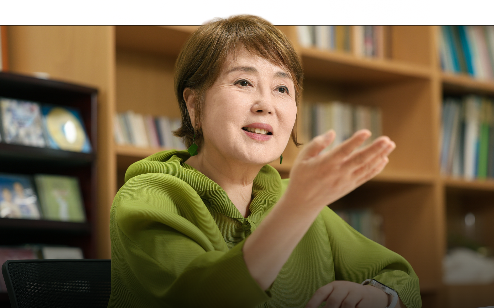
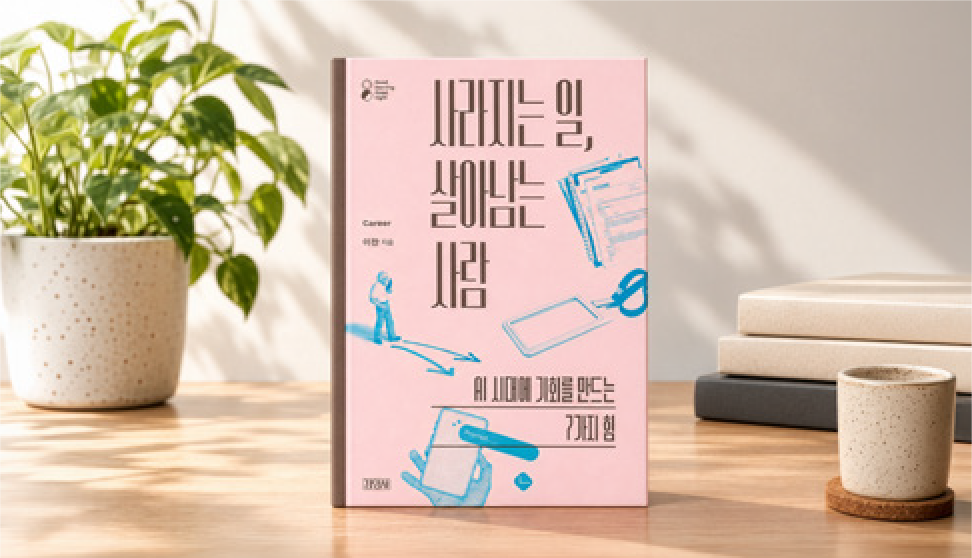
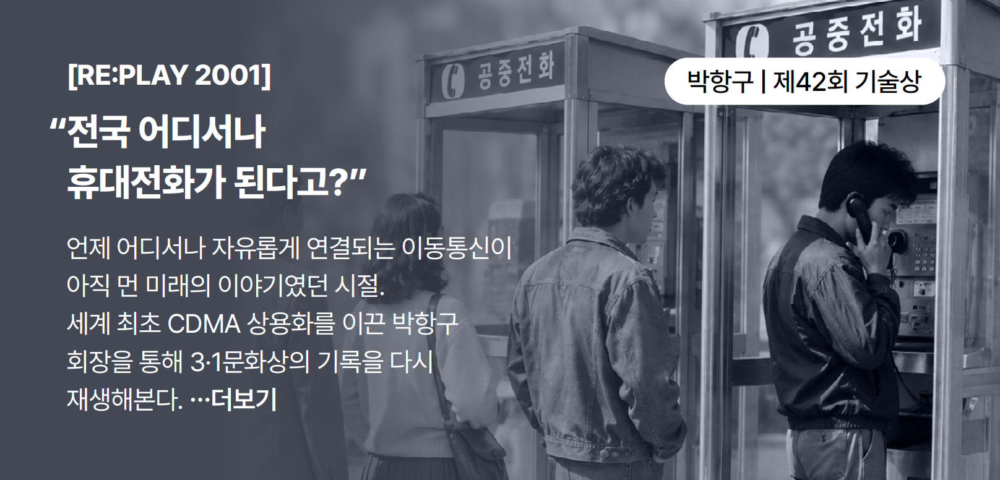
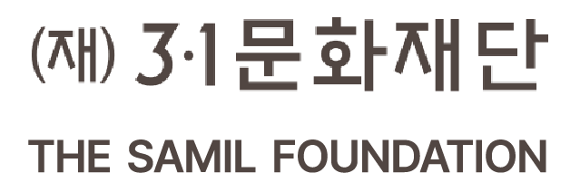

2026학년도 3·1장학생 선발 및 장학금 지급
2026학년도 3·1장학생은 박사과정 학생 7명이 최종 선발되었으며, 재단은 1년간 총 3억 원 규모의 장학금을 지원합니다.
|
2026.10.13 |
|
 |
|
3·1 PEOPLE
제67회 3·1문화상 예술상 수상자 김성녀 | 동국대학교 석좌교수50년간 무대를 지켜온 배우 김성녀, 마당놀이와 창극을 통해 전통을 오늘의 예술로 되살리고, 자신의 새로운 장르를 만들어 온 그녀의 여정을 만납니다. 전통은 어떻게 살아 움직이는 예술이 되는가. 그리고 한 예술가가 다음 세대에 남기고 싶은 것은 무엇인가. 제67회 3·1문화상 예술상 수상자 김성녀의 이야기를 들어봅니다. ...더보기 |
|
3·1 NEWS 전체보기 →2026학년도 3·1장학생 선발 및 장학금 지급2026학년도 3·1장학생은 박사과정 학생 7명이 최종 선발되었으며, 재단은 1년간 총 3억 원 규모의 장학금을 지원합니다. 제68회 3·1문화상 후보자 추천 접수 마감 및 심사위원회 착수제68회 3·1문화상 후보자 접수가 9월 1일 마감되며, 현재 분야별 심사위원회 구성과 공정한 심사를 통해 수상자를 선정할 계획입니다. 굿굿시리즈 신간 출간 및 출간 예정 소식 재단의 고양 단행본 ‘굿굿시리즈 24번째 도서’가 출간되었습니다. 삶과 사람을 바라보는 새로운 시선을 전합니다. 천안아산 다문화여학교 8차년도 성료 및 9차년도 개강재단이 후원하는 천안아산 다문화여학교 8차년도가 성료되었으며, 9차년도 프로그램이 새롭게 시작되었습니다. |
|
RE:PLAY 3·1
 [RE:PLAY 2001]
박광구 | 제42회 기술상
“전국 어디서나 휴대전화가 된다고?”언제 어디서나 자유롭게 연결되는 이동통신이 아직 먼 미래의 이야기였던 시절. 세계 최초 CDMA 상용화를 이끈 한국 현대사의 기록을 다시 재생합니다. |
|
WITH 3·1 여러분의 소식을 알려주세요!3·1문화재단 여러분의 반가운 소식과 궁금증을 기다립니다. 최근 활동이나 함께 나누고 싶은 소식이 있다면 편하게 알려주세요. 내 소식 전하기 ↗NOTICE 3·1 뉴스레터를 받아보신 분들께 감사의 선물을 전합니다.뉴스레터를 받아보신 분들을 위한 작은 선물을 준비했습니다. 선물 받아보기 ↗ |
|
3·1 ON 전체보기 →2026년 10월 소식
※수상자들의 직함 및 소속은 수상 당시를 기준으로 표기하였습니다. |
|
 [03035] 서울시 종로구 자하문로 77 창의문 5층
전화 02-735-3132 · 팩스 02-735-3130 · 이메일 3.1foundation@31cf.or.kr 수신거부 Unsubscribe |